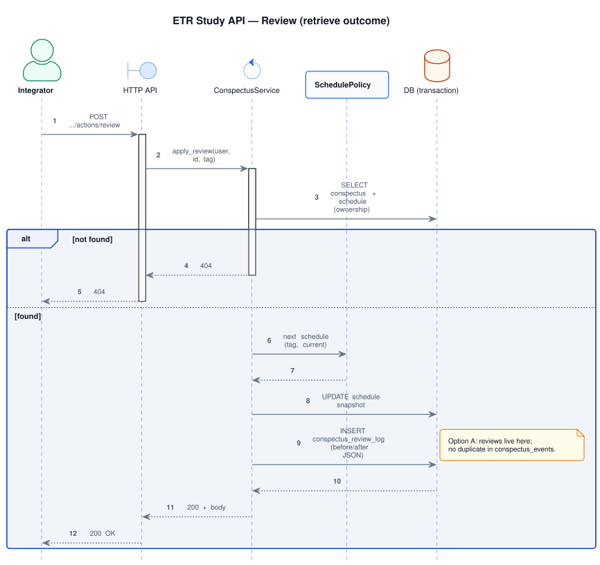

api · API reference
The interface this service provides: behavioural contract (functional requirements), the transactional envelope of every critical write, security defaults applied to every route, and the foundational sequence flows. Per-operation pages (request/response shapes, error catalogue, examples) live in the internal HTTP API hub; the OpenAPI document is published on the public developer portal.
REST style, error envelope, idempotency, and security come from the specification template and ADRs 0007, 0003, 0006, 0005.
Functional requirements
Behaviour the service must expose to integrators. Concrete request/response shapes are normative in internal API specs and the public OpenAPI document.
| ID | Requirement | Description |
|---|---|---|
| FR-1 | User management | Create and resolve users by system_user_id and system_uuid; preserve a stable client_uuid for ownership checks. Spec: /api/v1/user. |
| FR-2 | Conspectus create | Accept ETR-shaped payloads (cue_sheet, dense_paragraph, bullets, optional title); persist snapshot and initial schedule per SchedulePolicy; append a CREATED domain event. Spec: POST /conspectuses. |
| FR-3 | Retrieve and review | List due conspectuses; apply deterministic transitions from tags (easy/hard/forgot); append conspectus_review_logs with schedule snapshots. Spec: POST …/actions/review. |
| FR-4 | Learning error log | Store and list weak-cue records; optional links to conspectus and (via review_log_id) to a review session — semantically distinct from review tags (see domain model). Spec: /api/v1/errors. |
| FR-5 | Schedule insight | Expose aggregate slot distribution and schedule guidance for clients and dashboards. Spec: GET /schedule/summary. |
| FR-6 | Due conspectuses ("what to review") | List conspectuses due at or before a reference time, ordered per the review-suggestion policy; respect optional user timezone for calendar-day filters. Spec: GET /conspectuses/due. |
| FR-7 | Schedule policy resolution | On create and review, resolve (schedule_policy_id, algorithm_version) against schedule_policies; reject unknown or retired pairs with a stable error per ADR 0003. |
Critical writes — single transaction
Every critical write commits in one transaction. Failures roll back fully; integrators receive a stable
error per ADR 0003 and
may retry safely with the same Idempotency-Key
(ADR 0006).
| Operation | Transaction touches | Idempotency |
|---|---|---|
| Create conspectus | Insert conspectus + schedule + CREATED event |
Required Idempotency-Key (POST collection) |
| Review | Update schedule (bump schedule_revision) + insert conspectus_review_logs (no duplicate schedule event in conspectus_events by default) |
Required; scoped to resource; body carries expected schedule_revision |
| Review + learning error | Same as review + insert learning_errors with review_log_id pointing at the new log row |
Prefer one request and one transaction; alternatively two calls with explicit correlation |
| PATCH conspectus | Update body + bump content_version + content event |
Required per resource |
| Create learning error | Insert learning_errors (optional review_log_id) |
Required |
Security defaults applied to every route
Cross-cutting policy from ADR 0005. Per-route overrides live on the corresponding spec page in the internal API hub.
| Constraint | Default | Effect on integrators |
|---|---|---|
| Authentication | X-API-Key on /api/v1/* | Unauthorized calls return 401. |
| Rate limiting | 60 requests / 60 s per client and path | Overflow returns 429; clients must back off. |
| Request body size | 1 MB (API_BODY_MAX_BYTES) | 413 above the limit; large assets require a dedicated flow. |
| CORS | Allowlist origins | Browser clients from non-allowed origins cannot call the API directly. |
| Idempotency | Required for critical writes | Safe retries; reusing a key with a different body yields 409; deduplication rows persist in the database. |
Foundational sequences
Each sequence shows how a flow commits its log and snapshot in one transaction. PlantUML sources under
services/portal/internal/uml/sequences/.

CREATED event in one transaction · Source: create_conspectus_sequence.puml
review_retrieve_sequence.puml
review_log_id · Source: error_log_sequence.pumlOperations index
Per-operation specs (request shape, validation, response codes, examples) live under the internal API hub:
- User —
GET,POST,PUT,PATCH /api/v1/user - Conspectus — collection, due list, schedule summary, review action, PATCH
- Error log — list and create learning errors
- Error catalog — every error code, when it fires, and the recovery action
- Error matrix (auto-generated) — by HTTP status